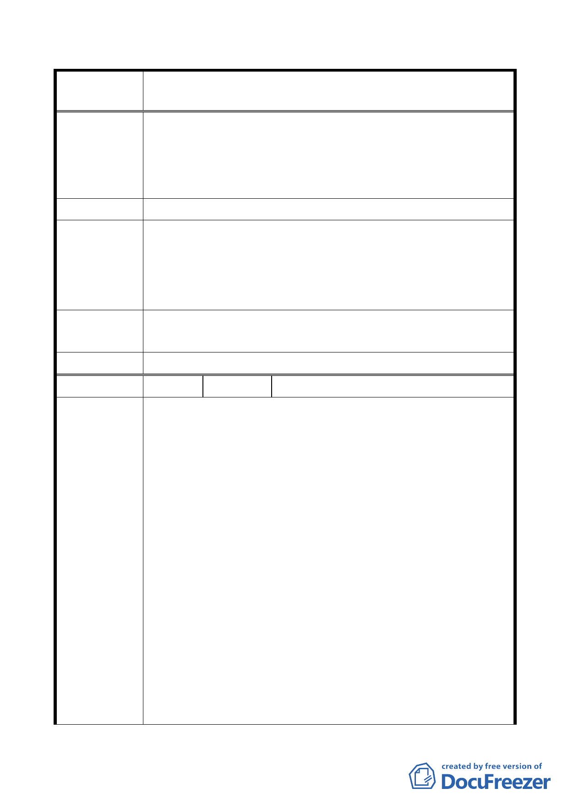

修訂本市都市計畫「臺北市山坡地開發建築要點」為「臺北市
案 名 都市計畫劃定山坡地開發建築管制規定」案
計畫、環境影響評估委員會、市地重劃計畫書之市地重劃區及
區段徵收地區，不在此限。俾符實際。或刪除：民國88年6月7
日前已完成市地重劃及區段徵收地區，不在此限。以利法規之
訂定及遵循，回歸市地重劃、區段徵收與一般山坡地之開發各
自的法令依據，以資區別，避免混淆，以利政府執行及辦理。
建議辦法
本市目前尚有22處經本府核定位於山限區之保變住地區，未完
成自辦市地重劃，為避免大規模之山坡地挖填方行為，影響山
市 府 回 應 坡地生態景觀及安全，依本府加強山坡地安全管理之既定政
說 明 策，不宜放寬。
專案小組
同「市府回應說明」。
審查意見
委 員 會 決 議 同「專案小組審查意見」。
編 號 3 陳情人
陳淑鳳等 3 人
一、台北市是一個高度發展、宜居之城市，但多年來卻有十萬
戶無殼居民無從覓得寸土之建地以供棲身之所，但在本市
近郊淺山地區，卻有數百公頃之住宅區建地閒置荒廢在那
裡，究其原因，在都市計畫「山坡地開發建築要點」規定，
坡度逾百分之三十之土地不得計入基地面積檢討容積率所
致。
二、查建築基地之開發規定與限制事項，內政部訂頒有建築技
術規則為準繩，坡度逾百分之三十坡地，在規則262條之規
定為不得開發建築（即建築物不得座落其上與變更地形），
陳情理由
但並無不得計入基地面積檢討容積率之規定。
三、台灣是民主社會，法律典章在保障人民生命與財產權，都
市計畫圖公告為住宅區，分區管制規則內，各類住宅區依
其區位、自然條件，均訂有不同之容積率，今一紙建築『要
點』卻把稍陡山坡地之生命財產抹殺剔除，容有審慎商榷
之處。
四、較陡坡地基於維護水土保持、公共安全，土地所有權人對
於不得建築均持肯定配合之態度。惟其容積屬於財產權不
宜抹殺，縱因其天然條件較差降低其容積率亦為可行途
徑，甚可得以容積移轉方式處理，其留下土地可供市府作
- 16 -